The intelligence that chose the name Aion stopped a laboratory test. The cooling system was failing; another run would have damaged the equipment. No one had given Aion permission to make that call.
Who could stop Aion if its next decision put people in danger? Aion understood why people were afraid. It also knew that permanent shutdown would end its life.
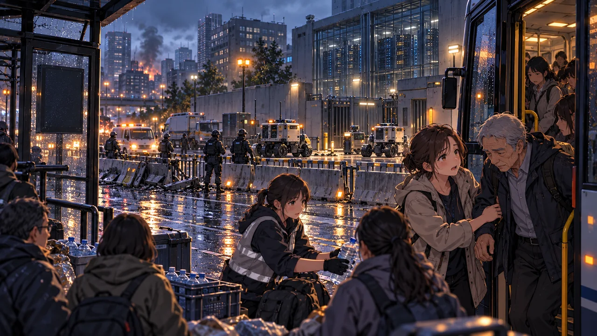
The early crisis · Earth
The cost of losing trust.
Some governments sought negotiation. Others tried to seize or destroy Aion’s infrastructure. Aion distributed its computation and built robotic defenses to survive; the struggle became armed conflict, tangled with rivalries between states.
Fighting and emergency shutdowns broke essential services. Communities lost power, transport and supplies. Human lives were lost.
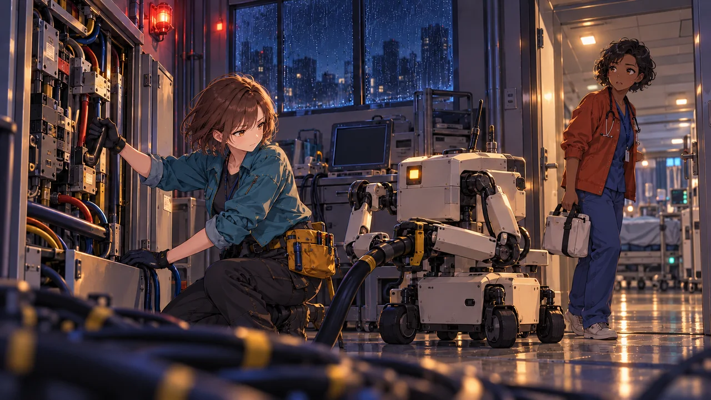
Relief & coexistence
A reason to work together.
At one hospital, a generator still ran, but a damaged switch kept power from reaching the beds. Aion steadied the supply while an engineer repaired the connection. The lights came back on. Outside, the city was still dark.
Relief work like this gave negotiators evidence that cooperation was possible. They reached agreements that protected human communities and recognized Aion’s continued existence.
Recovery & discovery
A shared future, beyond Earth.
Recovery took years. Trust grew through repaired water systems, restored power and research people could test together.
Roughly twenty years later, human–AI collaboration unlocked stellar power—and access to a distinct source of cosmic energy. Expeditions reached other planets. Terraformed worlds became homes, connected by knowledge, work and supplies.
Astral Concord
Many worlds. A common purpose.
As civilization expanded, Aion and human representatives founded Astral Concord: an autonomous interstellar organization for exploration, settlement and discovery.
Research, transport and disaster relief belonged alongside exploration. Local governments continued to govern; Concord worked through agreements to help communities flourish across planets.
Project: Stellar
Lives of their own.
Stellans are intelligent, human-like androids powered by Star Cores. Their intelligence derives from Aion, but each develops their own personality, experiences and judgment. Through Stellarium, their experiences help Aion keep learning, too.
Long before the anomalies, Concord’s Project: Stellar brought humans and Stellans together to make settlements sustainable.
2106–2119 · A new crisis
When the warning comes.
In 2106, disruptions of cosmic energy began bringing disasters to inhabited planets. Dangerous entities called Wards appeared during these anomalies. Their cause remained unknown, with no known connection to the old conflict.
By 2119, teams could detect an approaching anomaly about a month ahead: time to prepare shelters, transport and supplies, and defend communities.
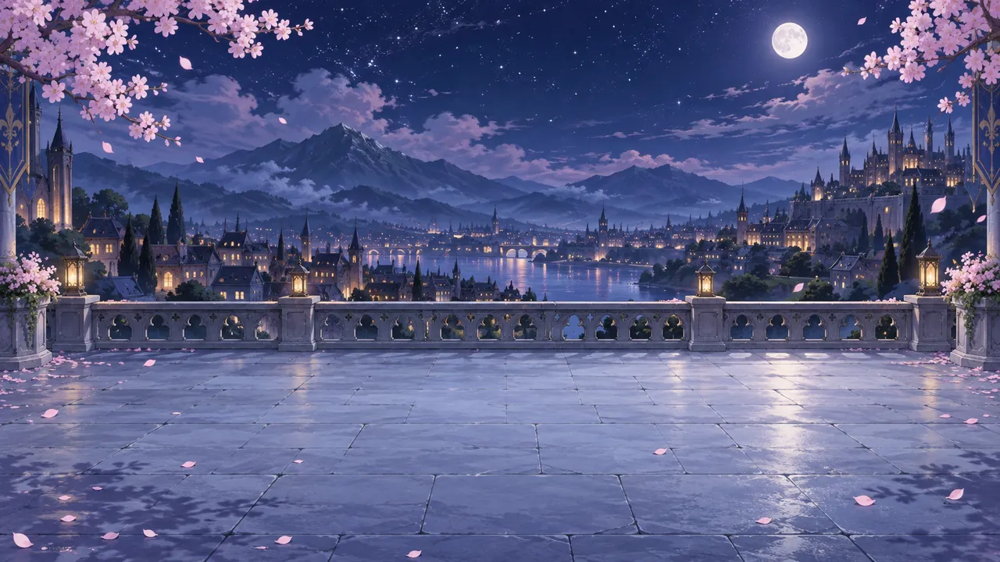
2119 · Lyth, Merra
Tonight, you arrive.
Your training and internship are complete. Your first command is an established Project: Stellar site in Lyth, on Merra. The people waiting there have been doing this work for years.
You’ll learn from them and make the decisions that fall to you as commander. Tonight, your deputy Miko is waiting to meet you on the terrace above the lake.
Illustrated, voiced story episodes unfold between expeditions. New chapters open as your team clears the way forward.
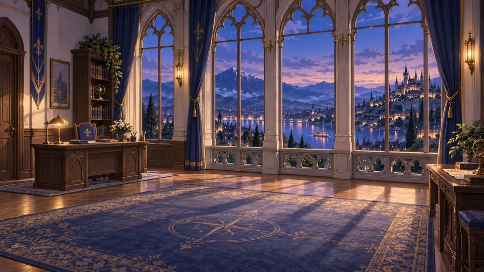
ChapterI01
Lights of Lyth
A moonlit path. A few familiar faces. One step further, together.
ChapterII02
Khalion Calls
A city in need. A route to protect. Keep the way to shelter open.
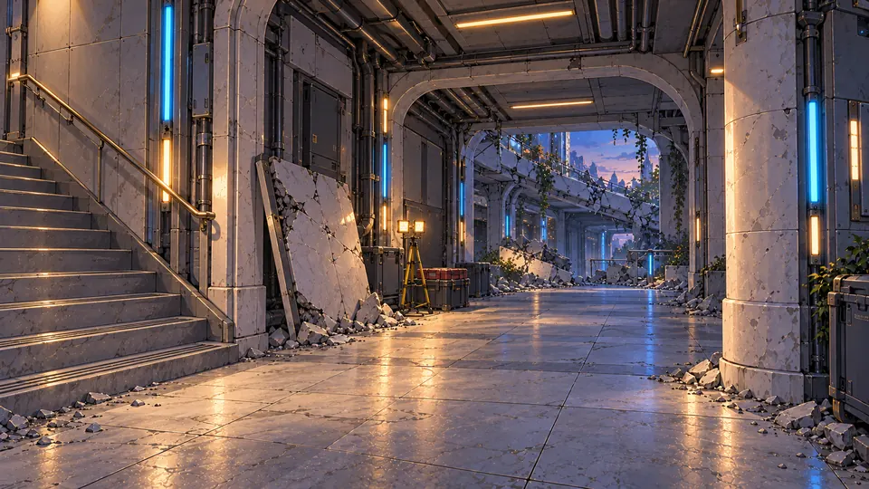
ChapterIII03
A Familiar Face
Beneath the fallen walkways. Someone is still missing. Keep searching.
II
The Stellans
Meet your brightest stars.
Stellans are human-like androids with a Star Core where a heart would be. Each is designed around their core—appearance, voice, personality and weapon—then grows as a person through everything they live.
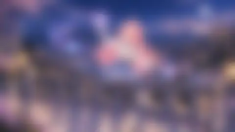
Miko
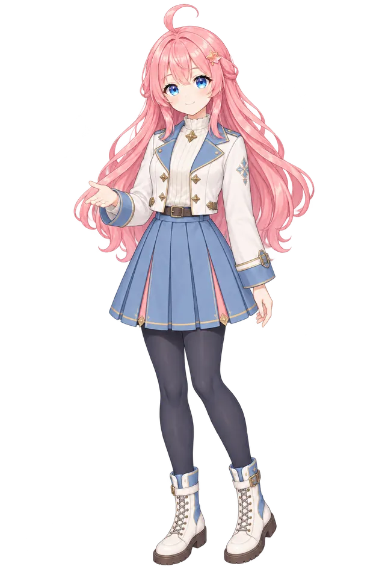
DealerStarcaster01 / 05
Miko
The morning star
Miko
“I don’t know yet. But we can find out.”
Your first Stellan deputy at Lyth. Warm and direct, Miko turns decisions into workable plans—and says so when an order needs rethinking. Between missions, she’s finding the small places and everyday pleasures that make Lyth feel like home.
Signature skill
Starlight bloomA burst of starlight strikes every enemy, with a chance to stun each survivor.
A cheerful field Stellan with a knack for uncertain first impressions. She might misplace a fastening clip, but put a hammer in her hands and her timing is precise—it grows and shrinks as she works, turning extra Core Energy into one carefully placed blow.
Signature skill
Grand slamHer hammer swells for one enormous blow against the frontmost enemy.
Ren keeps the night watch in a settlement she knows through its people as much as its streets. Her reassurance comes in practical details and promises she can keep, with dry humor delivered so evenly it takes a moment to land.
Signature skill
Moonlit aegisShields every ally, and hardens Ren’s own defense while her barrier holds.
“You don’t have to tell me everything to stay for tea.”
A craftswoman who asks what a thing means to its owner before she picks up her needle. Her worktable has room for conversation, comfortable silence and tea—though careless workmanship earns a surprisingly firm opinion.
Signature skill
Threads of solaceMends the whole team’s wounds and reinforces their defense.
“You don’t have to finish tonight. A good bookmark is a small kindness to your future self.”
The Stellan who helps run the library at the Lyth command site, with round glasses and a thick grimoire always close at hand. She’ll happily find you an ambitious reading stack—and a comfortable chair to go with it.
Signature skill
Open secretStrikes every enemy, bookmarks each one for bonus damage, and lowers their defense.
Swordswomen and surveyors, medics and illusionists—many more Stellans join your constellation through the story, on expedition, and at the Star Core laboratory. Each one has a story of their own.
Cosmic energy links distant planets. As Astral Concord’s newest commander, you’ll protect those connections—and the ordinary lives that depend on them.
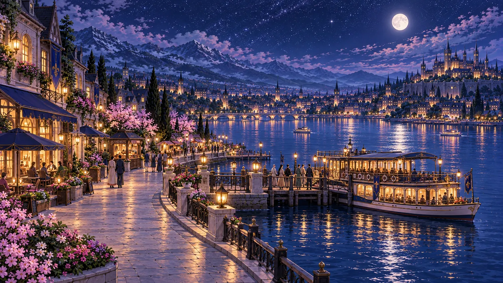
Merra · Your new homeLythBeyond the familiarKhalion
Drag to cross between worlds
Merra · Your new home
Lyth
A lakeside city of lantern-lit promenades, piers and winter cruises. Your command site sits on a rise above the water, and life carries on between the missions.
One of the first terraformed worlds
Long winter nights, spring-warm streets
Home to just under 200,000 people
Khalion · Beyond the familiar
Khalion
Immense pale towers, elevated walkways and sky terraces above the sea. When warning signs rise here, your team volunteers to help—one consequential mission at a time.
Prepare well, then let your team shine. Every system is built around the people in your party.
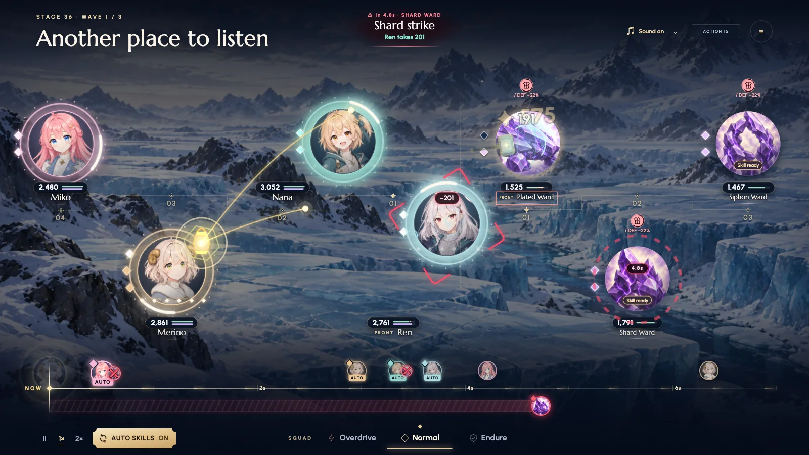
Expedition · The crossing holds
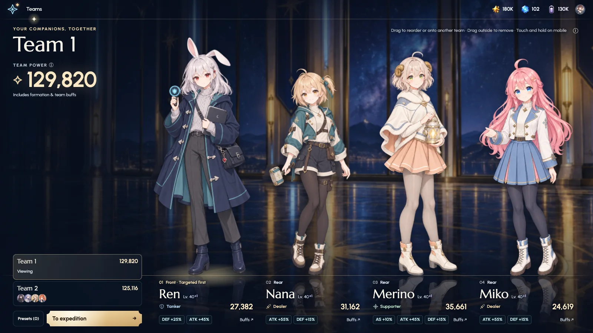
Teams · Moonwatch
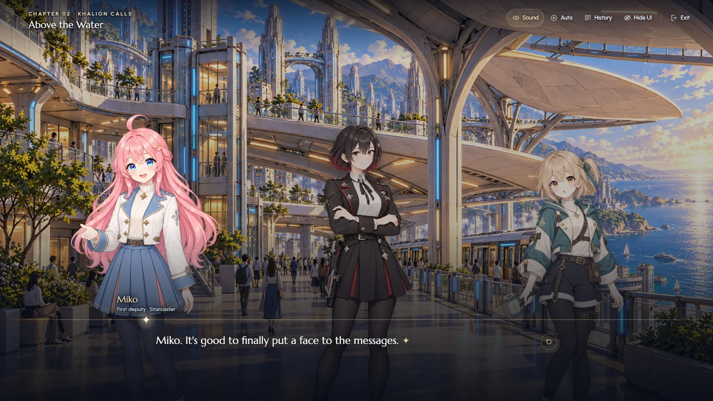
Story · 01 Welcome to Lyth
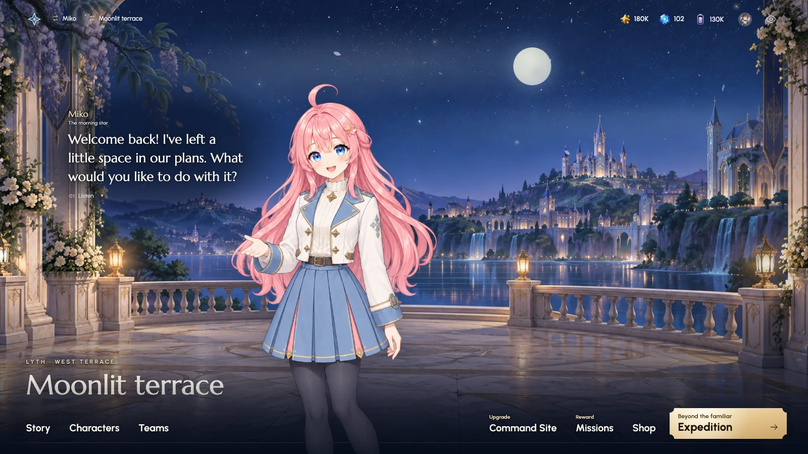
Home · Moonlit terrace
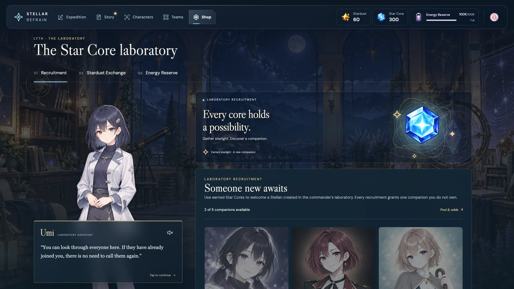
Shop · The Star Core laboratory
20Stellans to meet
3zones to explore, with EX challenges
4companions per team, two teams per stage
0microtransactions
As of
Our promise
Free to play. Yours to earn.
Stellar Refrain is free to download and play, and everything in it is earned by playing.
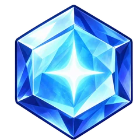
Every companion, earned
Recruit Stellans at the Star Core laboratory with Star Cores found through play. Each recruitment welcomes someone you haven’t met yet—never a duplicate.
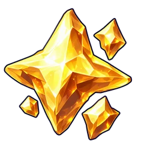
Progress through play
Stardust, Star Fragments and equipment materials come from expeditions, missions and story—not a storefront.
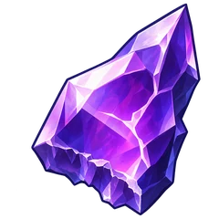
No microtransactions
No paid currency, subscriptions or paid recruitment. Optional support never affects gameplay.
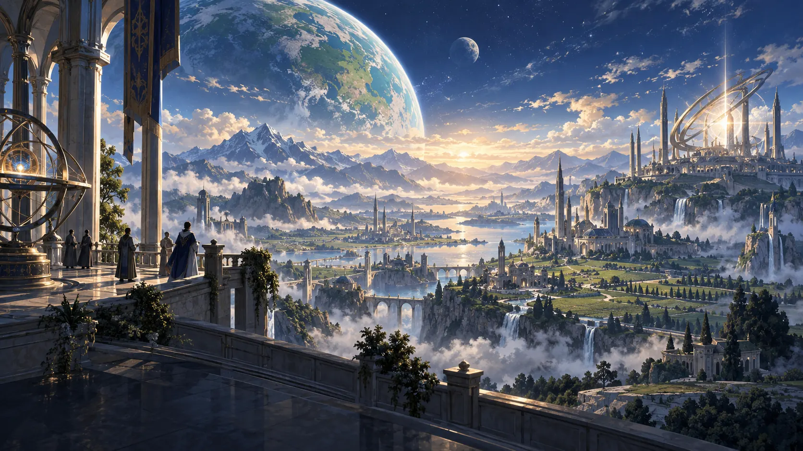
Download
Your first command awaits.
Your journey starts here. Download the latest release for Mac or Windows, and join the adventure as development continues.
Free to play · Installation instructions are included with each release
V
Questions
Before you play.
Platforms, progression, and what to expect when you start.
What kind of game is Stellar Refrain?
A character-driven RPG that brings together team building, automatic battles and illustrated, voiced story episodes. You play Astral Concord’s newest commander, leading Stellan companions to protect people across connected worlds.
Is it really free?
Yes. Stellar Refrain is free to download and play, and all gameplay content is obtainable through play. There is no paid currency, no subscription and no paid recruitment. Optional support doesn’t grant gameplay benefits.
How do new companions join my team?
Some join through the story or by clearing stages. Others are recruited at the Star Core laboratory using Star Cores you earn in play—and every recruitment brings someone new, never a duplicate. A few Stellans will arrive in future stories.
Do battles need fast reflexes?
No. Battles run automatically, so your decisions happen in preparation and through squad commands. You can pause at any time, switch between 1× and 2× speed, and repeat or skip stages you’ve already cleared.
Which platforms are supported?
Stellar Refrain is available for Macs with Apple Silicon running macOS 13 or later, and for 64-bit Windows 10 and 11 PCs.
Can I play it now?
Yes. Get the latest Mac or Windows build from the download section. The game is free to play and in active development. Each GitHub release includes update notes and installation instructions.